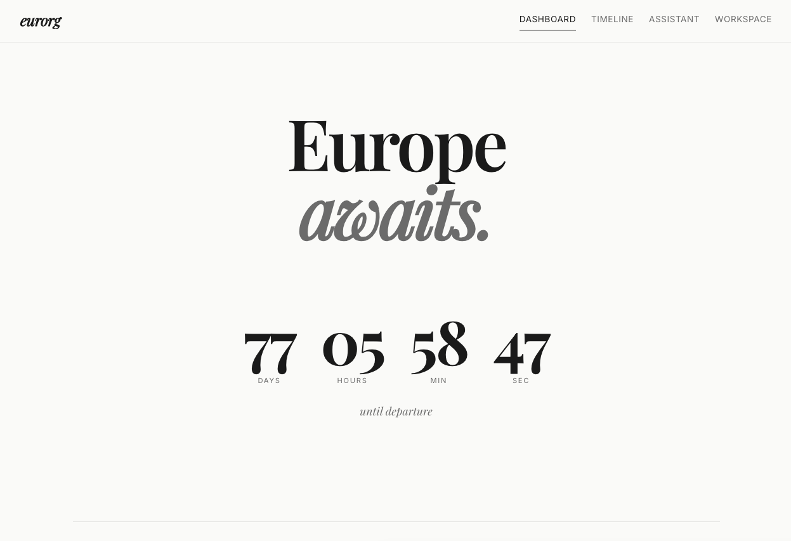

flowchart LR
subgraph Frontend
A[React 19 + TypeScript] --> B[Vite Dev Server]
end
subgraph Backend
C[FastAPI] --> D[JSON File Storage]
C --> E[claude CLI]
C --> F[gws CLI]
end
B -- "/api proxy" --> C
E --> G[Claude AI]
F --> H[Google Workspace]
EURORG
AI
Full Stack
Introduction
Planning an international move is a project in its own right. Visa applications, lease terminations, pet care arrangements, packing timelines — the logistics compound fast. Spreadsheets work, but they don’t help you think. I wanted something that could track tasks across time-bound phases, answer planning questions on the fly, and pull in my existing calendar and files without switching tabs.
eurorg is that something: a local-first, full-stack web app built for my partner and me as we plan our move from Australia to Germany on a working holiday visa. It combines a phased task timeline, a streaming AI assistant powered by Claude, and a Google Workspace integration layer — all in roughly 965 lines of application code.
This article walks through the motivations, architecture, and key implementation patterns behind the project.
The Problem
My partner and I are moving from Australia to Germany on 28 May 2026 for a working holiday. We have a cat, a lease to break, a German bureaucracy to navigate, and a departure date that isn’t moving. Things needed to happen in a specific order: visa stuff first, then lease notice, then pack and move to my parents’ for the last month, then somehow our cat sorted.
I tried a spreadsheet. It worked but it didn’t help me think. I tried a notes app. Total chaos. Jira felt like using a forklift to move a couch.
What I actually wanted was pretty simple:
- Tasks grouped by phase — not one giant list, but “stuff to do in March”, “stuff to do in April”, etc.
- Someone to ask questions — like “what’s the actual process for bringing a dog to Europe” without opening seventeen browser tabs.
- My calendar and emails in one place — I kept switching tabs to check if I’d already booked something.
- Nothing to maintain — no cloud deploys, no databases, no accounts. It just runs on my laptop.

Architecture Overview
eurorg is a classic two-tier app: a React single-page application talks to a FastAPI backend over REST and Server-Sent Events.
What makes the architecture unusual is the absence of API keys and databases. The backend shells out to two CLIs:
claude --printfor AI responses (uses an existing Claude subscription)gwsfor Google Workspace operations (Drive, Calendar, Gmail)
Data persists as plain JSON files protected by asyncio.Lock for concurrent write safety. The entire backend state fits in two files totalling under 6 KB.
Tech Stack
| Layer | Technology | Why |
|---|---|---|
| Frontend framework | React 19 + TypeScript | Type safety, hooks-based state, large ecosystem |
| Build tool | Vite 6 | Fast HMR, zero-config TypeScript, proxy support |
| Routing | React Router v7 | Lazy-loaded pages, nested layouts |
| Animations | Framer Motion | Declarative page transitions and micro-interactions |
| Styling | CSS Modules + custom tokens | Scoped styles without framework overhead |
| Backend | FastAPI (Python) | Async-first, automatic OpenAPI docs, Pydantic validation |
| Data | JSON files | Zero setup, portable, perfectly adequate for single-user |
| AI | Claude CLI | No API key management, uses existing subscription |
| Google APIs | gws CLI | Pre-authenticated, supports Drive/Calendar/Gmail |
The Four Pages
Dashboard
The landing page provides an at-a-glance summary: a countdown timer to departure, overall task progress as a percentage, the next uncompleted task, traveller information, and quick-action links.
The countdown hook recalculates every second using date-fns:
// useCountdown.ts — real-time countdown to departure
export function useCountdown(targetDate: string) {
const [timeLeft, setTimeLeft] = useState(calculateTimeLeft(targetDate));
useEffect(() => {
const timer = setInterval(
() => setTimeLeft(calculateTimeLeft(targetDate)),
1000
);
return () => clearInterval(timer);
}, [targetDate]);
return timeLeft;
}Timeline
The core planning view. Tasks are organised into six phases:
- Now — Mid March 2026 (visa, dentist, vet, lease notice)
- Late March — Early April 2026 (insurance, flights, international licence)
- 1–15 April 2026 (pack current place, finalise lease)
- 15 April — Move to Parents
- May 2026 (Europe accommodation, documents, phone)
- Final Week — 21–28 May 2026 (final packing, Badu handover)
Phase definitions live in two places — the backend’s PHASES list and the frontend’s PHASE_ORDER constant — and must stay in sync. This is a deliberate trade-off: duplicating a six-element array is simpler than introducing a shared schema package for a single-user app.
Each task supports create, toggle (complete/incomplete), and delete operations. The backend acquires an async lock, reads the JSON file, mutates, and writes back:
# tasks.py — concurrent-safe task mutation
async def _save_tasks(tasks: list[dict]) -> None:
async with _lock:
async with aiofiles.open(TASKS_PATH, "w") as f:
await f.write(json.dumps(tasks, indent=2))Assistant
The chat page connects to Claude through a streaming pipeline:
- The frontend sends the full conversation history to
POST /api/chat. - The backend spawns
claude --print --no-inputas a subprocess with a system prompt containing trip context. - Stdout is yielded chunk-by-chunk as SSE events.
- The frontend consumes the stream via a
ReadableStreamreader and accumulates text into the assistant message.
# chat.py — SSE streaming from Claude CLI
async def _stream_claude(prompt: str):
proc = await asyncio.create_subprocess_exec(
"claude", "--print", "--no-input", prompt,
stdout=asyncio.subprocess.PIPE,
stderr=asyncio.subprocess.PIPE,
)
async for chunk in proc.stdout:
text = chunk.decode()
yield f"data: {json.dumps({'text': text})}\n\n"On the frontend, a custom useChat hook manages conversation state and delegates streaming to the API layer:
// api.ts — SSE stream consumer
export async function apiStream(
path: string,
body: unknown,
onChunk: (text: string) => void
) {
const res = await fetch(`/api${path}`, {
method: "POST",
headers: { "Content-Type": "application/json" },
body: JSON.stringify(body),
});
const reader = res.body!.getReader();
const decoder = new TextDecoder();
// ... read loop, parse SSE frames, call onChunk
}This approach gives a responsive, token-by-token display without polling or WebSockets.
Workspace
The workspace page has three tabs — Drive, Calendar, and Gmail — each backed by a gws CLI call through the backend proxy.
The proxy router is security-conscious by design:
- Commands run via
asyncio.create_subprocess_exec(nevershell=True, preventing injection). - A 15-second timeout kills hung processes.
- Output is parsed as JSON where possible, with raw text as fallback.
# gws_proxy.py — safe CLI execution
proc = await asyncio.create_subprocess_exec(
"gws", service, resource, method, *flags,
stdout=asyncio.subprocess.PIPE,
stderr=asyncio.subprocess.PIPE,
)
try:
stdout, stderr = await asyncio.wait_for(
proc.communicate(), timeout=15.0
)
except asyncio.TimeoutError:
proc.kill()
raise HTTPException(504, "GWS command timed out")Design System
The visual design uses a minimal, typographic approach:
- Playfair Display for headings (serif, editorial feel)
- Inter for body text (clean sans-serif)
- Warm white background (
#FAFAF8) with blue (#1A1AFF) and orange (#FF4D2D) accents - Dark mode support via a
data-themeattribute - Smooth easing throughout:
cubic-bezier(0.22, 1, 0.36, 1)
All styling is handled through CSS Modules (one .module.css per component) and global design tokens in a single global.css file. No Tailwind, no component library — just CSS.
What I’d Do Differently
Shared phase definitions. The duplicated phase arrays haven’t caused issues yet, but a shared JSON schema or codegen step would be safer for a longer-lived project.
Database. JSON files work perfectly at this scale, but a SQLite database (perhaps via sqlmodel) would make querying and filtering tasks easier if the app grew.
Authentication. Since this runs locally, there’s no auth layer. For deployment, even a simple token gate would be necessary.
Tests. The project has no automated tests. For a personal tool with a fixed end date, manual testing has been sufficient, but it’s the first thing I’d add if the scope expanded.
Conclusion
eurorg is a reminder that useful software doesn’t need to be complex. Under 1,000 lines of code, no database, no API keys, no deployment pipeline — and it handles phased task management, streaming AI chat, and Google Workspace integration for a real move to another continent.
The key decisions that kept it simple:
- JSON files instead of a database
- CLI subprocesses instead of API client libraries
- Custom hooks instead of a state management library
- CSS Modules instead of a CSS framework
- Local-first instead of cloud-deployed
Sometimes the best architecture is the one with the fewest moving parts.
eurorg is open source and available on GitHub. Built with React, FastAPI, Claude, and a healthy sense of deadline pressure.